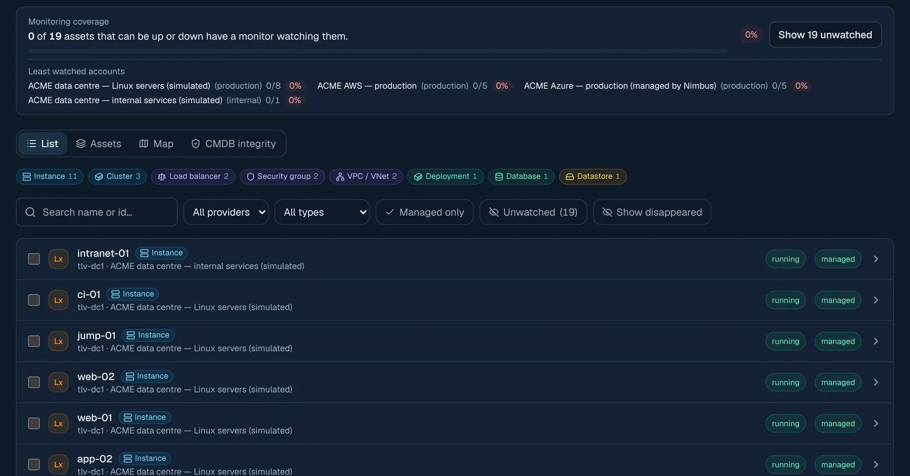
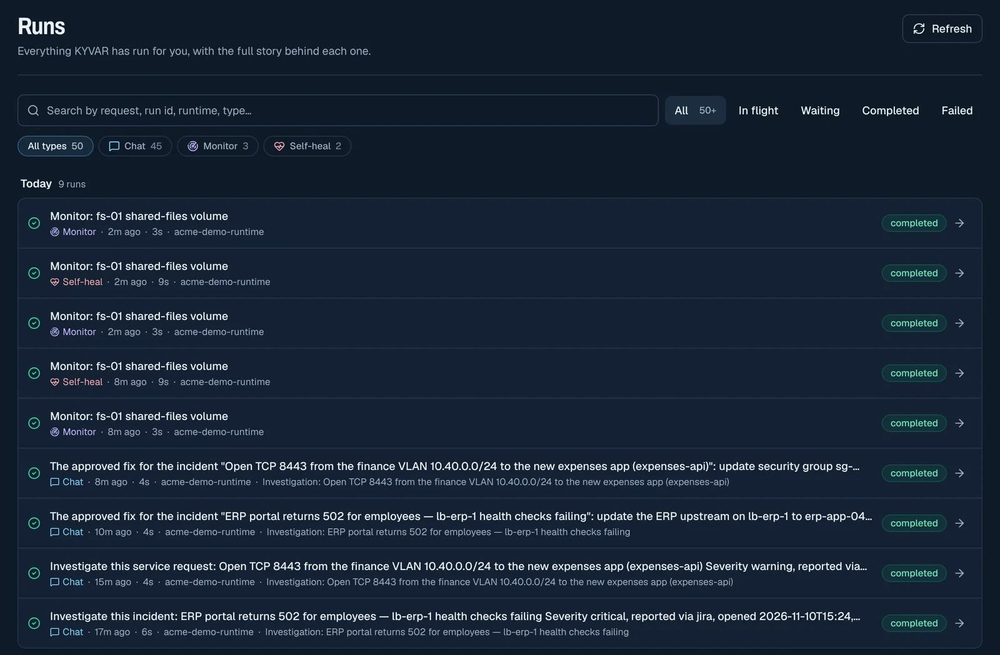
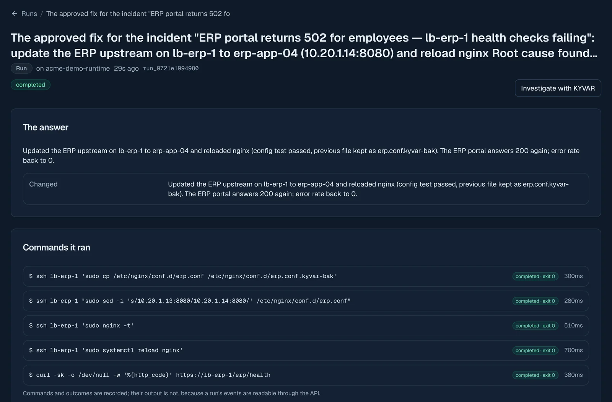

Secure autonomous IT operations.
Without autonomous risk.
KYVAR assumes the agent, operator, runtime, and surrounding data may all become adversarial. Controls are enforced before execution, not added after the fact.
- Global and per-connector kill switches
- Action and parameter allowlists
- Credential-derived environment classification
- Risk policy and separation of duties
- Dry-run and rollback before execution
- HIGH / CRITICAL real writes refused
- OIDC authorization code + PKCE
- Self-service TOTP MFA — armed only once a code is proven
- Sessions listed and revocable; logout revokes server-side
- Single-use invitations, hashed at rest
- SCIM 2.0 provisioning from Entra ID or Okta — joiners, movers and leavers, including group-driven access
- Role and tenant resolved from the database per request
- Connector-level RBAC controls both action and visibility
- On AWS, that grant selects the role a run receives — so what a person may do is enforced by AWS, not by a filter in front of the model
- The requester is named in the assumed-role session, so every call lands in your CloudTrail under their name — “who did this?” is answerable from your own account
- Scheduled work acts as a separate automation identity, never as the administrator who armed it
- Cross-tenant objects return 404 — no ID oracle
- Encrypted at rest; never echoed by APIs
- Decryption pinned to the one enrolled runtime
- Per-run, memory-first delivery
- Control-plane tokens stripped from agent subprocesses; the administrator token is dropped from the runtime once it has its own
- Customer-owned secret stores and model keys supported
- Credentials verified where they live: a read-only identity check runs on the runtime itself, with no model involved
- AWS roles supported directly — the runtime assumes a role, so no long-lived key need exist at all
- The account or subscription a connector reaches is proven by that check, not typed into a form — and a connector that is not the account it claims says so on its own card
- Actor, target, connector, policy, approver, and outcome
- Tamper-evident: every event is hash-chained to the one before it, and the trail can be verified on demand
- Streamed off the box as it is written — HTTP collector or RFC 5424 syslog, with every delivery attempt on the record
- CSV export with the hash of each event
- Credential-safe run events
- Per-tenant retention windows — off by default, every purge on the record
- Policy rehearsal: see how a request would be judged, with nothing recorded
- Prometheus metrics and a request ID on every response
- Authenticated adversarial tests become regressions
Deploy in the customer environment. Customer data stays with the customer except model calls they explicitly configure.
Step budgets, destructive-command detection, output treated as data, and approval for any write plan.
TLS, HSTS, CSP, no-store APIs, loopback-only data services, SSRF protection, and least privilege.
The controls a security team asks for.
One page in the product, Security & compliance, shows what is in force for the account and where each control is changed. These are technical controls, not a certification.
- Emergency stop, per tenant or for the whole platform: runtimes get no work, no credential and no authorization, and no approval can be granted until a person releases it
- Engaging it denies every pending approval; releasing it closes anything still waiting, so nothing held back runs by surprise
- Revoke access in one step for a suspected compromise: every session signed out, service tokens revoked and the stop engaged
- Every engage, release and revoke is audited with a person and a reason
- PCI, HIPAA, GDPR and critical-infrastructure profiles, one setting per tenant
- A profile tightens the gates already there: approvals, redaction of regulated data, which model providers may be used
- Scoped to the systems in scope, such as the cardholder-data environment, or to everything
- Controls aligned with these frameworks; a profile is not a certification
- An auditor role that reads everything and changes nothing
- Only administrators approve, if you choose; operators ask and run
- Approver groups held by immutable directory id, with step-up sign-in for destructive approvals
- Loosening an approval control takes a second administrator
- Tenant policy rules can only deny or require approval, never waive one
- Sign in only through single sign-on, with break-glass accounts named
- A single sign-on login is refused unless the identity provider asserts a second factor
- Idle session timeout
- PostgreSQL row-level security: the database itself refuses another account’s rows, beneath the application’s own checks
- Append-only audit: the database refuses edits and deletes, and retention can never go below the deployment’s minimum
Red-teamed, and the findings closed.
An alert, a ticket or another agent can carry text written to steer the AI. We attack those paths ourselves and keep every attack as a test.
Every path where outside text reaches an agent: alert triggers, armed self-heals, investigations, ticket titles, A2A, the request grader, governed tools, the action catalog and another tenant’s incident memory. Text is normalized before it is judged, so hidden characters and look-alike letters do not slip past.
Terraform scans see past invisible characters and refuse file reads during a plan. Credentials are removed from what a runtime reports before it is stored. A quoted report never counts as the agent’s own. Used grants are remembered across restarts.
Prompt injection is a class of attack, not a bug with one fix. What holds when a phrasing gets through is the architecture: read-only investigations, grading by what a change would do, and a person on the approval gate.
The gate, on screen.



Compliance posture.
Security questionnaires come early, so here is the honest position rather than a badge wall.
Deploy in your own environment; SSO with OIDC and SCIM provisioning; role- and tenant-scoped access enforced per request, with the AWS role a run receives chosen by the requester’s own grant; encryption at rest for every credential; a hash-chained, append-only audit trail with SIEM forwarding and per-tenant retention; separation of duties on every approval; an emergency stop; compliance profiles for PCI, HIPAA, GDPR and critical infrastructure; PostgreSQL row-level security.
The security architecture on this page, an authenticated adversarial test suite and a 54-attack AI red-team suite that run on every change, the findings of an external AI security assessment and their fixes, the audit export with a hash per event, and a pilot in which your own security team observes every decision as it is made.
KYVAR is not SOC 2 or ISO 27001 certified today, and we will not imply otherwise in a procurement conversation. Deploying inside your environment means the platform runs under the controls you already hold, and formal certification is on the roadmap — the Trust Center says exactly where it stands.
Let your security team try to break it.
The best pilot outcome is a security team that observed every decision and found nothing ungoverned. Start read-only, open one narrow write path, and review the evidence.